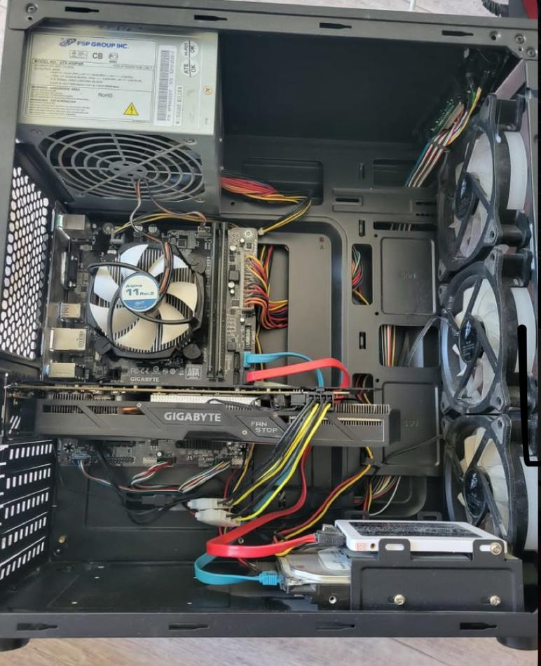
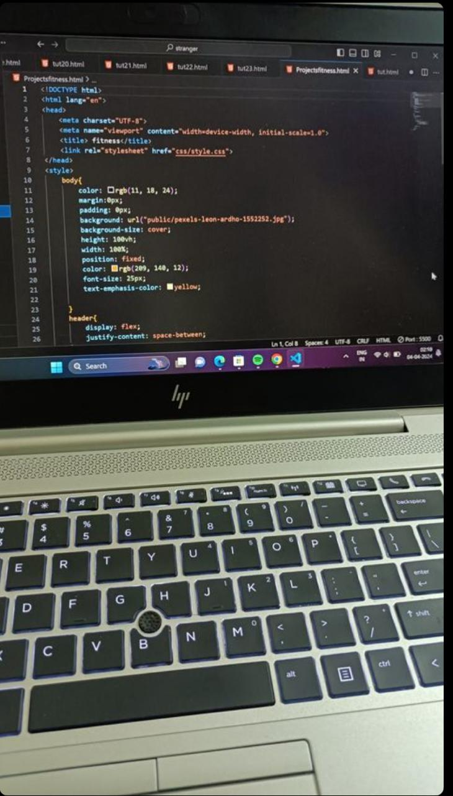

Suporte técnico
Diagnóstico e resolução de problemas.
TÉCNICO DE INFORMÁTICA · MATOLA, MOÇAMBIQUE
Técnico de Suporte informático com experiência em suporte técnico, redes de computadores e manutenção de sistemas. Focado em oferecer soluções eficientes e apoio tecnológico.

01 — SOBRE MIM
Sou Técnico de Informática, com experiência prática em instalação e configuração de equipamentos, suporte a utilizadores, manutenção de computadores e redes.
Gosto de resolver problemas de forma rápida e clara e de manter os sistemas de uma organização a funcionar sem interrupções.
Diagnóstico e resolução de problemas.
Routers, Wi-Fi e cabos.
Manutenção e configuração de PCs.
HTML e CSS.
02 — EXPERIÊNCIA
03 — COMPETÊNCIAS
Configuração e manutenção de redes.
Criação de interfaces web.
Instalação e configuração.
Diagnóstico e resolução.
Manutenção preventiva.
Análise de falhas e soluções.
04 — PROJETOS
 NETWORK
01
NETWORK
01
Routers · Wi-Fi · Cabos

Support 02Windows · Hardware · Software

Web 03HTML · CSS · JavaScript
05 — FORMAÇÃO
Instituto Transporte e Comunicações
Conclusão do curso Vocacional 3 (CV3)
Conclusão do curso Vocacional 4 (CV4)
06 — CONTACTO